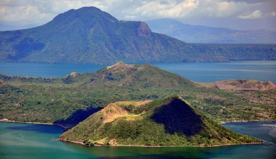
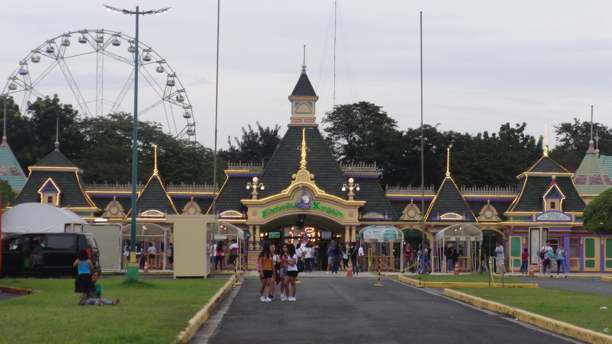
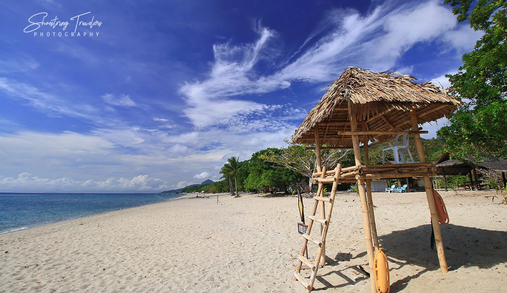
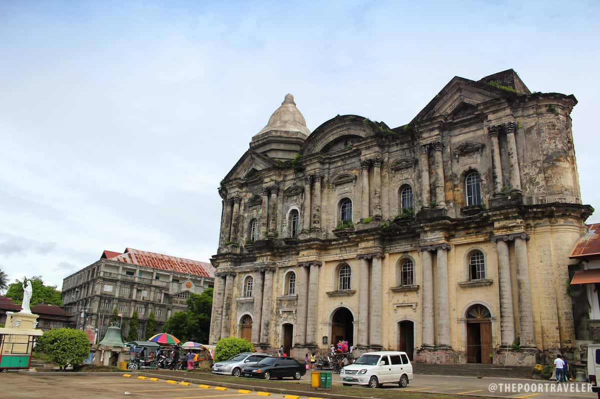
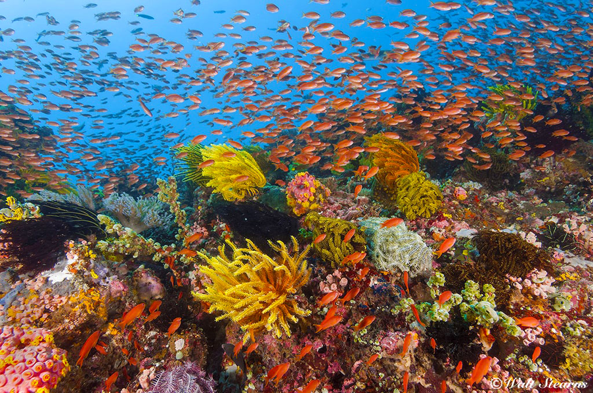

Located in Laguna, Pagsanjan Falls is a majestic waterfall that can be reached by taking a thrilling boat ride up the river. It's a popular spot for nature lovers and adventure seekers.
Taal Volcano

Situated in Batangas, Taal Volcano is one of the most active volcanoes in the Philippines. It offers a unique experience as visitors can hike to the crater and witness the stunning view of the volcano's caldera and the surrounding Taal Lake.
Enchanted Kingdom

Located in Santa Rosa, Laguna, Enchanted Kingdom is a popular theme park that offers a wide range of rides and attractions for all ages. It's a perfect destination for families and thrill-seekers.
Rizal Shrine
Situated in Calamba, Laguna, the Rizal Shrine is the birthplace of the Philippine national hero, Dr. Jose Rizal. It's a historical site that showcases the life and works of Rizal.
Laiya Beach

Located in San Juan, Batangas, Laiya Beach is a popular beach destination known for its white sand, clear waters, and tranquil ambiance. It's a great spot for swimming, sunbathing, and beach activities.
Taal Heritage Town

Situated in Batangas, Taal Heritage Town is known for its well-preserved Spanish colonial architecture. Visitors can explore ancestral houses, museums, and the famous Taal Basilica.
Anilao Diving Sites

Anilao in Batangas is a popular diving destination known for its vibrant coral reefs and diverse marine life. It's a great spot for snorkeling and scuba diving enthusiasts.